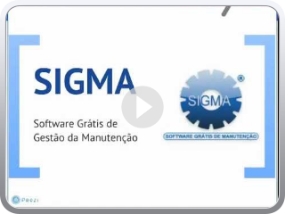

Participe do 25º Encontro Técnico de PCM em São Paulo
Apresentação Comercial Sigma
Curso WEB de formação de Planejadores de manutenção e Instrutores PCM/SIGMA
Adding Video to Blog by VideoLightBox.com v2.1